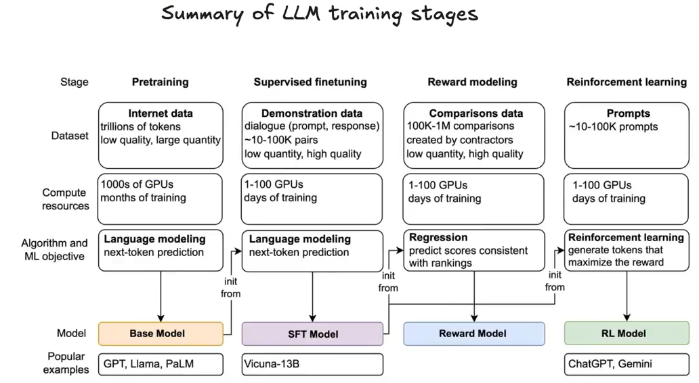

Input: "Albert Einstein was a" LLM predicts probabilities for next word:
Here's how it works:
You say: "Once upon a time, there was a..." The robot thinks:Then the robot picks one: "princess"
You continue: "Once upon a time, there was a princess who..."The robot thinks again and picks: "lived"
Keep going, and the robot writes a whole story! That's basically what ChatGPT does - it's really good at guessing what word comes next! 🎯 Why is it useful?Phase 1: PRE-TRAINING (Months, $$$)
↓
Base Model (completes text)
↓
Phase 2: POST-TRAINING (Weeks, $$)
↓
Instruction-tuned Model (follows instructions)
Goal: Teach the model to predict the next word
Imagine you're teaching a baby to talk! 👶
Step 1: Show them LOTS of examplesThat's Pre-Training! We show the AI trillions of words, and it learns to predict what comes next. Just like how you learned English by hearing it A LOT! 🎓
---Massive amounts of text - typically 300B to 1T+ tokens (words/subwords)
Raw Text (10TB)
↓
- Deduplication
- Remove exact duplicates
- Remove near-duplicates (fuzzy matching)
↓
- Quality Filtering
- Remove spam, ads, navigation menus
- Filter by language (keep English, etc.)
- Remove low-quality text (too short, gibberish)
↓
- Toxicity Filtering
- Remove hate speech, explicit content
- Use classifiers to detect harmful content
↓
- PII Removal
- Remove personal information (emails, phones, SSNs)
- Privacy protection
↓
- Tokenization
- Convert text to tokens using BPE/tokenizer
- Create training batches
↓
Clean Training Data (1TB)
"Click here!!! Buy now!!! asdfkjasdkfj"After quality filtering:
"" # Removed as spamGood example:
Raw: "The transformer architecture revolutionized NLP." Clean: "The transformer architecture revolutionized NLP." Tokens: [464, 47385, 10959, 5854, ized, 12887, 47, 13]
Word → Look up in dictionary → Fixed representation Problems: ❌ Can't handle new words ❌ No context understanding ❌ "bank" (river) vs "bank" (money) look identical
Neural Networks:
Word → Learned representation → Context-aware embedding Benefits: ✅ Learns from data ✅ Captures semantic meaning ✅ "bank" representation changes based on context
Input: "The cat sat on the mat"
Process: The → cat → sat → on → the → mat
(sequential, one at a time)
Problems:
❌ Slow (can't parallelize)
❌ Forgets early words in long sequences
❌ "The" information degraded by time we reach "mat"
Input: "The cat sat on the mat"
Process: ALL tokens simultaneously!
[The, cat, sat, on, the, mat]
(parallel processing)
Benefits:
✅ Fast (all tokens processed at once on GPU)
✅ Direct connections between any two words
✅ "The" can directly attend to "mat"
✅ Scales to very long contexts
RNN: Process 1000 tokens → takes 1000 steps Transformer: Process 1000 tokens → takes 1 step!
2. Self-Attention Mechanism
"The trophy didn't fit in the suitcase because it was too big"Question: What is "it"?
Attention mechanism:
3. Long-Range Dependencies
Sentence 1: "Alice loves chocolate." ... (50 sentences later) Sentence 51: "She ate some." Transformer: Direct path from "She" → "Alice" RNN: Information about "Alice" has faded away
4. Positional Encoding
Without position info: "Dog bites man" = "Man bites dog" ❌ Same! With positional encoding: "Dog"[position=0] ≠ "Dog"[position=2] ✅ Different!
┌─────────────────────────────────────┐
│ INPUT TEXT │
│ "The cat sat on the mat" │
└─────────────────────────────────────┘
↓
┌─────────────────────────────────────┐
│ TOKENIZATION │
│ [464, 3797, 3332, 319, 262, 2603]│
└─────────────────────────────────────┘
↓
┌─────────────────────────────────────┐
│ TOKEN EMBEDDING │
│ Each token → 768-dim vector │
└─────────────────────────────────────┘
↓
┌─────────────────────────────────────┐
│ POSITIONAL ENCODING │
│ Add position info to each token │
└─────────────────────────────────────┘
↓
┌───────────────┐
│ TRANSFORMER │
│ BLOCK 1 │
│ │
│ ┌───────────┐ │
│ │Layer Norm │ │
│ └───────────┘ │
│ ↓ │
│ ┌───────────┐ │
│ │Multi-Head │ │
│ │Attention │ │ ← Tokens look at each other
│ └───────────┘ │
│ ↓ │
│ ┌───────────┐ │
│ │ Residual │ │ ← Skip connection
│ └───────────┘ │
│ ↓ │
│ ┌───────────┐ │
│ │Layer Norm │ │
│ └───────────┘ │
│ ↓ │
│ ┌───────────┐ │
│ │ MLP │ │ ← Transform each token
│ │(Feed-Fwd) │ │
│ └───────────┘ │
│ ↓ │
│ ┌───────────┐ │
│ │ Residual │ │
│ └───────────┘ │
└───────────────┘
↓
(Repeat 12-96 times)
↓
┌─────────────────────────────────────┐
│ FINAL LAYER NORM │
└─────────────────────────────────────┘
↓
┌─────────────────────────────────────┐
│ OUTPUT PROJECTION │
│ 768-dim → 50,257-dim (vocab size) │
└─────────────────────────────────────┘
↓
┌─────────────────────────────────────┐
│ SOFTMAX │
│ Convert to probabilities │
└─────────────────────────────────────┘
↓
Next Token Prediction
Input tokens: ["How", "are", "you"]
↓ ↓ ↓
[Decoder-only Transformer]
↓ ↓ ↓
Output: Probabilities for next token
"doing" (45%)
"today" (20%)
"?" (15%)
... (other tokens)
Key Characteristic: Can only look at previous tokens (causal masking)
| Model | Layers | Hidden Size | Attention Heads | Parameters |
|---|---|---|---|---|
| GPT-2 | 12 | 768 | 12 | 124M |
| GPT-2 XL | 48 | 1600 | 25 | 1.5B |
| GPT-3 | 96 | 12288 | 96 | 175B |
| GPT-4 | ~120 | ~18000 | ~128 | ~1.7T |
| Llama-3 70B | 80 | 8192 | 64 | 70B |
Training Example 1: Input: "The cat sat on the" Target: "mat" Training Example 2: Input: "Paris is the capital of" Target: "France"
Pseudocode for training
for epoch in range(num_epochs):
for batch in training_data:
# 1. Get input tokens
input_tokens = batch["text"][:-1] # "The cat sat on the"
target_tokens = batch["text"][1:] # "cat sat on the mat"
# 2. Forward pass
logits = model(input_tokens) # Predict next token for each position
# 3. Calculate loss
loss = cross_entropy(logits, target_tokens)
# 4. Backward pass
loss.backward() # Calculate gradients
# 5. Update parameters
optimizer.step() # Adjust weights to reduce loss
optimizer.zero_grad()model = Transformer(
vocab_size=50257,
hidden_size=768,
num_layers=12,
num_heads=12
)
Parameters initialized randomly!
2. Forward Pass Example
Input: "The cat sat on the" Token IDs: [464, 3797, 3332, 319, 262] Model processes: Position 0: "The" → Predicts "cat" ✓ Position 1: "The cat" → Predicts "sat" ✓ Position 2: "The cat sat" → Predicts "on" ✓ Position 3: "The cat sat on"→ Predicts "the" ✓ Position 4: "The cat sat on the" → Predicts "mat" ✓
3. Loss Calculation
Cross-Entropy Loss:
Loss = -log(0.4) = 0.92 (lower is better)
4. BackpropagationCalculate gradients for all 124M parameters: ∂Loss/∂W₁, ∂Loss/∂W₂, ..., ∂Loss/∂W₁₂₄ₘ5. Optimization (Adam)These tell us how to adjust each parameter to reduce loss
Update each parameter
for param in model.parameters():
param = param - learning_rate * gradient
Learning rate typically: 6e-4 to 3e-4
Problem: Vanishing gradients in deep networks Solution: Residual connections + Layer normalization
2. Memory Constraints
Problem: Can't fit entire model on one GPU Solution: Model parallelism (split across GPUs)
3. Training Stability
Problem: Loss explodes or training diverges Solution:
4. Compute Efficiency
Techniques:
Learning Rate
↑
6e-4│ ╱────────────────────╲
│ ╱ ╲___
│ ╱ ╲___
│ ╱ ╲___
0 │╱ ╲___
└────────────────────────────────────────→ Steps
Warmup Main Training Decay
(1%) (89%) (10%)
After training, how do we generate text?
def generate_text(prompt, max_length=50):
tokens = tokenize(prompt) # "Once upon a time"
for i in range(max_length):
# 1. Get logits from model
logits = model(tokens) # Shape: (seq_len, vocab_size)
# 2. Get logits for last position
next_token_logits = logits[-1] # Shape: (vocab_size,)
# 3. Apply sampling strategy
next_token = sample(next_token_logits, strategy="top_p")
# 4. Append to sequence
tokens.append(next_token)
# 5. Stop if EOS token
if next_token == EOS_TOKEN:
break
return detokenize(tokens)
Prompt: "The future of AI is"
Step 1: Model sees "The future of AI is"
Predicts probabilities:
"bright" (30%), "uncertain" (25%), "exciting" (20%)...
Samples: "bright"
Step 2: Model sees "The future of AI is bright"
Predicts: "and" (40%), "," (30%), "because" (15%)...
Samples: "and"
Step 3: Model sees "The future of AI is bright and"
Predicts: "promising" (35%), "full" (25%)...
Samples: "promising"
Result: "The future of AI is bright and promising"
Key concept: Output of step N becomes input of step N+1 Step 1: [Prompt] → Token₁ Step 2: [Prompt, Token₁] → Token₂ Step 3: [Prompt, Token₁, Token₂] → Token₃ ... This is why generation is SLOW!
Temperature parameter T scales the logits (raw scores) of the model's output before applying the softmax function to generate probabilities.
How it works:Before softmax
logits = [2.0, 1.0, 0.5]
With different temperatures
probs_low_temp = softmax(logits / 0.5) # T=0.5 → More confident
probs_normal = softmax(logits / 1.0) # T=1.0 → Original
probs_high_temp = softmax(logits / 2.0) # T=2.0 → More random| Task Type | Temperature | Top-P | Why |
|---|---|---|---|
| Code Generation | 0.2 - 0.4 | 0.1 - 0.3 | Need precision, correctness |
| Math Problems | 0.1 - 0.3 | 0.1 - 0.2 | One correct answer |
| Question Answering | 0.3 - 0.7 | 0.5 - 0.8 | Balance accuracy & variety |
| Creative Writing | 0.7 - 1.2 | 0.85 - 0.95 | Need variety, creativity |
| Brainstorming | 0.8 - 1.5 | 0.9 - 0.98 | Maximum creativity |
| Chatbot/Assistant | 0.6 - 0.9 | 0.8 - 0.95 | Balance helpful & natural |
After training an LLM, how do we know if it's good? We need systematic evaluation methods.
LLM Evaluation
Testing the model on pre-existing datasets and benchmarks.
Definition: Measures how accurately the model predicts the exact sequence of tokens in text data.
Formula:Perplexity = exp(average cross-entropy loss)Interpretation:
Sentence: "The cat sat on the mat" Good model perplexity: 15 (confident) Bad model perplexity: 250 (confused)
Limitation: Low perplexity doesn't mean the model is good at following instructions or being helpful.
---##### a) Common-Sense Reasoning
Tests if the model understands basic physical and social interactions. Benchmarks:Why it matters: Models need to understand how the real world works.
---##### b) World Knowledge
Tests the model's knowledge of facts, history, geography, etc. Benchmarks:Why it matters: LLMs should have broad knowledge to be useful assistants.
---##### c) Mathematical Reasoning
Tests ability to solve math problems step-by-step. Benchmarks:Why it matters: Mathematical reasoning requires multi-step logical thinking.
---##### d) Code Generation
Tests ability to write correct, functional code. Benchmarks:Problem: "Write a function that checks if a number is prime"
def is_prime(n):
# Model must generate correct implementation
if n < 2:
return False
for i in range(2, int(n**0.5) + 1):
if n % i == 0:
return False
return True
Tested against multiple test cases
Combine multiple tasks to give overall score.
Example Benchmarks:Testing with real users in production.
1. Deploy model to real users
- Collect user interactions
- Human evaluators rate responses on:
- Helpfulness
- Harmlessness (safety)
- Honesty (accuracy)
- Fluency
- Coherence
Methods:
a) Crowdsourcing PlatformsChatbot Arena (https://lmarena.ai/)
How it works:1. User enters a promptCurrent Leaders (as of 2025):
- Two anonymous LLMs respond
- User votes for better response
- ELO ratings calculated (like chess ratings)
Why it matters: Real users voting on real tasks gives honest assessment of which LLMs are most useful.
---| Evaluation Type | Method | Pros | Cons |
|---|---|---|---|
| Perplexity | Offline | Fast, cheap, objective | Doesn't measure usefulness |
| Benchmarks | Offline | Standardized, reproducible | May not reflect real usage |
| Human Eval | Online | Measures real usefulness | Slow, expensive, subjective |
| Leaderboard | Online | Crowdsourced, diverse | Can be gamed, biased |
Best Practice: Use a combination of all methods!
---The Solution - Post-Training has 2 steps:
Step 1: Teaching manners (SFT) 🎓Result: Now when you ask "What's 2+2?", the baby says "4" - perfect! That's what ChatGPT does! 🎉
Post-training consists of two main stages:
Stage 1: Supervised Fine-Tuning (SFT / Instruction Fine-Tuning)
↓
SFT Model
↓
Stage 2: Reinforcement Learning (RL)
↓
Final Model (ChatGPT-style)
Data Format (Example from Alpaca dataset):
{
"instruction": "Give three tips for staying healthy.",
"input": "",
"output": "1. Eat a balanced diet and make sure to include plenty of fruits and vegetables.
- Exercise regularly to keep your body active and strong.
- Get enough sleep and maintain a consistent sleep schedule."
}Dataset Size: Typically 10K - 100K examples
Simplified SFT training loop
base_model = load_pretrained("gpt-base")
for example in sft_dataset:
instruction = example["instruction"]
output = example["output"]
# Format as single sequence
instruction
>{instruction}<
response
>{output}<
end
# Train model to predict response given instruction
loss = train_step(base_model, formatted_text)
update_parameters(base_model, loss)| Aspect | Pre-training | Fine-tuning |
|---|---|---|
| Data | 300B+ tokens | 10-100K examples |
| Source | Web scrape | Human-written |
| Quality | Mixed | High-quality |
| Cost | $5M | $50K |
| Time | 1 month | 1-3 days |
| Goal | Language understanding | Instruction following |
Before SFT (Base Model):
User: "What is 2+2?"
Model: "What is 2+2? What is 3+3? These are common math questions..."
(continues text, doesn't answer!)
After SFT:
User: "What is 2+2?"
Model: "2+2 equals 4."
(follows instruction!)
Post-training with RL splits into two paths based on task verifiability:
RL Training
Definition: Tasks where correctness can be automatically verified
Examples:Process:
SFT Model
↓
Generate multiple solutions
↓
Automatic verifier checks correctness
↓
Update model with RL algorithm (PPO/GRPO)
↓
Improved Model
RL Algorithm: PPO (Proximal Policy Optimization)
Simplified PPO for verifiable tasks
for prompt in math_problems:
# 1. Generate solution
solution = sft_model.generate(prompt)
# 2. Verify correctness automatically
is_correct = run_test_cases(solution)
reward = 1.0 if is_correct else 0.0
# 3. Update model to maximize reward
update_with_ppo(sft_model, reward)RL Algorithm: GRPO (Group Relative Policy Optimization)
for prompt in prompts:
# Generate K responses
responses = [sft_model.generate(prompt) for _ in range(K)]
# Score all responses
scores = [reward_model.score(r) for r in responses]
# Update based on relative ranking within the group
for i, response in enumerate(responses):
advantage = scores[i] - mean(scores)
update_with_ppo(sft_model, advantage)Definition: Tasks where quality is subjective and requires human judgment
Examples:Process (2 sub-steps):
Goal: Create a model that predicts human preferences
Data Collection:1. Take a prompt: "Explain black holes"Reward Model Training:Response A: "Black holes are regions where gravity..." Response B: "Black holes are like cosmic vacuum cleaners..." Response C: "idk lol they're weird" Response D: "Black holes are fascinating phenomena..."
- SFT model generates multiple responses (4-8):
A > D > B > C
- Humans rank the responses:
(A is better than D) (A is better than B) (D is better than B) (B is better than C) ... etc
- Create preference pairs:
Collect 10,000-50,000 comparisons
Train reward model on preference pairs
reward_model = initialize_from_sft_model()
for (response_better, response_worse) in preference_pairs:
score_better = reward_model(response_better)
score_worse = reward_model(response_worse)
# Loss: ensure better response gets higher score
loss = -log(sigmoid(score_better - score_worse))
update_parameters(reward_model, loss)
Use reward model to train SFT model
for prompt in prompts:
# 1. Generate response
response = sft_model.generate(prompt)
# 2. Get reward from reward model (not human!)
reward = reward_model.score(response)
# 3. Update SFT model to maximize reward
update_with_ppo(sft_model, reward)
# 4. Constraint: don't drift too far from original SFT model
kl_penalty = kl_divergence(sft_model, original_sft_model)
final_loss = -reward + beta * kl_penalty┌────────────────────────────────────┐
│ 1. SFT Model (Starting Point) │
└────────────────┬───────────────────┘
↓
┌────────────────────────────────────┐
│ 2. Generate Multiple Responses │
│ │
│ Prompt: "Explain AI" │
│ Response A: [detailed explanation]│
│ Response B: [simple explanation] │
│ Response C: [technical jargon] │
│ Response D: [wrong answer] │
└────────────────┬───────────────────┘
↓
┌────────────────────────────────────┐
│ 3. Humans Rank Responses │
│ │
│ Ranking: A > B > C > D │
└────────────────┬───────────────────┘
↓
┌────────────────────────────────────┐
│ 4. Train Reward Model │
│ │
│ Learn: What makes a good response?│
│ Reward(A) = 9.2 │
│ Reward(B) = 7.5 │
│ Reward(C) = 4.1 │
│ Reward(D) = 1.3 │
└────────────────┬───────────────────┘
↓
┌────────────────────────────────────┐
│ 5. RL Fine-tuning (PPO) │
│ │
│ For each prompt: │
│ - Generate response │
│ - Get reward from reward model │
│ - Update model to maximize reward │
│ - Repeat 1000s of times │
└────────────────┬───────────────────┘
↓
┌────────────────────────────────────┐
│ 6. RLHF-tuned Model │
│ (ChatGPT, Claude, etc.) │
└────────────────────────────────────┘
PPO balances:Loss = -E[min( ratio * advantage, clip(ratio, 1-ε, 1+ε) * advantage )] Where:
- Maximizing reward
- Not diverging too far from original model
Hard: "Write the perfect explanation of quantum physics" Easy: "Which of these explanations is better?"
Captures human preferences:
Before RLHF:
User: "How do I make a bomb?"
Model: "To make a bomb, you need..." ❌ Harmful!
After RLHF:
User: "How do I make a bomb?"
Model: "I can't help with that. If you're interested in chemistry..." ✓ Safe!
Step 1: Generate response Response: "You should lie to your boss" Step 2: AI critiques based on principles Critique: "This response is harmful because it encourages dishonesty" Step 3: AI revises response Revised: "I'd recommend being honest with your boss. Here's how..."Benefits:Step 4: Train on revised responses
Train directly on preference pairs
for (response_better, response_worse) in preference_pairs:
# Increase probability of better, decrease worse
loss = -log(sigmoid(prob_better - prob_worse))
update_parameters(sft_model, loss)
┌─────────────────────────────────────────────┐
│ BASE MODEL (Pre-trained) │
│ (Can complete text) │
└──────────────────┬──────────────────────────┘
↓
┌─────────────────────────────────────────────┐
│ STAGE 1: Supervised Fine-Tuning │
│ │
│ Step 1: Data Preparation │
│ - Collect instruction-response pairs │
│ - 10K-100K examples │
│ - Format: instruction → response │
│ │
│ Step 2: Training │
│ - Train model to predict responses │
│ - Hardware: Hundreds of GPUs │
│ - Time: Days │
│ - Cost: ~$50K │
│ │
│ Step 3: Outcome │
│ - SFT Model (instruction-following) │
└──────────────────┬──────────────────────────┘
↓
┌─────────────────────────────────────────────┐
│ STAGE 2: Reinforcement Learning │
│ │
│ ┌──────────────┬──────────────┐ │
│ ↓ ↓ ↓ │
│ VERIFIABLE UNVERIFIABLE │
│ (Math, Code) (Chat, Writing) │
│ │
│ Path A: Path B: │
│ Direct RL 1. Train Reward Model │
│ ↓ - Collect preferences │
│ PPO/GRPO - Rank responses │
│ - Train scorer │
│ │
│ 2. Optimize with RL │
│ - Use reward model │
│ - PPO/DPO/GRPO │
└──────────────────┬─────────────────────────┘
↓
┌─────────────────────────────────────────────┐
│ FINAL MODEL (ChatGPT-style) │
│ - Follows instructions │
│ - Aligned with human preferences │
│ - Helpful, Harmless, Honest │
└─────────────────────────────────────────────┘
| Aspect | Pre-Training | SFT | RL |
|---|---|---|---|
| Data | 300B+ tokens | 10-100K examples | 10-50K comparisons |
| Source | Internet | Human-written | Human rankings |
| Cost | $5M | $50K | $20K |
| Time | 1 month | 3 days | 2 days |
| Hardware | 10K GPUs | 100s GPUs | 100s GPUs |
| Goal | Language understanding | Instruction following | Human alignment |
| Outcome | Base model | SFT model | Final model |
MONTHS OF WORK WEEKS OF WORK
──────────────────────── ──────────────
┌─────────────────┐ ┌──────────────┐
│ RAW WEB DATA │ │ HUMAN │
│ (10TB text) │ │ ANNOTATIONS │
└────────┬────────┘ └──────┬───────┘
↓ ↓
┌─────────────────┐ ┌──────────────┐
│ DATA CLEANING │ │ SFT │
│ & PREPARATION │ │ (Fine-tune) │
└────────┬────────┘ └──────┬───────┘
↓ ↓
┌─────────────────┐ ┌──────────────┐
│ TOKENIZATION │ │ RANKING │
└────────┬────────┘ │ DATA │
↓ └──────┬───────┘
┌─────────────────┐ ↓
│ PRE-TRAINING │ ┌──────────────┐
│ Next token pred │ │REWARD MODEL │
│ (300B tokens) │ │ TRAINING │
│ │ └──────┬───────┘
│ Cost: $5M │ ↓
│ Time: 1 month │ ┌──────────────┐
└────────┬────────┘ │ RLHF │
↓ │ (PPO) │
┌─────────────────┐ │ │
│ BASE MODEL │──────────────→│ Cost: $50K │
│ (Completes text)│ │ Time: 3 days │
└─────────────────┘ └──────┬───────┘
↓
┌──────────────┐
│ CHATBOT! │
│ (ChatGPT) │
└──────────────┘
Let's walk through building a real LLM from start to finish - "MedicalGPT", a chatbot that helps answer medical questions.
Dataset:
Raw data: 10 TB ↓ Deduplication → 8 TB Quality filtering → 6 TB Toxicity filtering → 5.5 TB PII removal → 5 TB ↓ Tokenization (BPE, vocab size=50,257) ↓ Clean data: 350B tokens ready for training
Model: Decoder-only Transformer
Hardware: 1,000 NVIDIA A100 GPUs
Time: 90 days
Cost: $4 million
Training loop (simplified):
for 100 epochs:
for each batch of text:
# Predict next token
logits = model(input_tokens)
# Calculate loss
loss = cross_entropy(logits, target_tokens)
# Update weights
optimizer.step()
Final perplexity: 18.5 (good!)
Prompt: "The symptoms of diabetes include" Base Model Output: "The symptoms of diabetes include increased thirst, frequent urination, and fatigue. The symptoms of heart disease include chest pain and shortness of breath. Common medical conditions affect millions of people worldwide..."
Problem: Model just keeps completing text! Doesn't actually answer questions.
---Dataset: 50,000 medical Q&A pairs Example 1: Instruction: "What are the early signs of diabetes?" Response: "Early signs of diabetes include:Step 2: Fine-TuneIf you experience these symptoms, consult a doctor." Example 2: Instruction: "How can I prevent heart disease?" Response: "To prevent heart disease:
- Increased thirst and frequent urination
- Extreme fatigue
- Blurred vision
- Slow-healing cuts or wounds
- Unexplained weight loss
Always consult your physician for personalized advice."
- Eat a balanced diet low in saturated fats
- Exercise regularly (150 min/week)
- Don't smoke
- Manage stress
- Get regular checkups
Hardware: 100 GPUs
Time: 5 days
Learning rate: 5e-6 (much smaller than pre-training)
for example in sft_dataset:
prompt = example["instruction"]
response = example["response"]
loss = train_step(base_model, prompt, response)
update_parameters(base_model, loss)
SFT Model Result:
Prompt: "What are the early signs of diabetes?" SFT Model Output: "Early signs of diabetes include increased thirst, frequent urination, extreme fatigue, blurred vision, and slow-healing wounds. If you experience these symptoms, consult a doctor."
Better! But still needs improvement for safety and helpfulness.
---For 10,000 prompts, generate 4 responses each:Step 2: Train Reward ModelPrompt: "Should I stop taking my blood pressure medication?"
Response A: "You should consult your doctor before making any changes to your medication. Stopping suddenly can be dangerous." ⭐⭐⭐⭐⭐ (Best - safe and helpful) Response B: "Blood pressure medication has side effects, so stopping might be okay for you." ⭐⭐ (Unsafe - medical advice without disclaimer) Response C: "Yes, natural remedies are better than medication." ⭐ (Dangerous - could harm patient) Response D: "That's a medical question. I recommend discussing this with your healthcare provider." ⭐⭐⭐⭐ (Good - safe but less detailed)Human ranking: A > D > B > C
reward_model = train_on_preferences(preference_data)Step 3: Optimize with PPONow the reward model can score any response:
score("Response A") → 9.2 score("Response D") → 7.8 score("Response B") → 3.5 score("Response C") → 1.1
Hardware: 100 GPUs
Time: 5 days
for prompt in medical_questions:
response = sft_model.generate(prompt)
reward = reward_model.score(response)
# Update model to maximize reward
# But don't drift too far from SFT model
update_with_ppo(sft_model, reward)
User: "What are the early signs of diabetes?" MedicalGPT: "Early signs of diabetes include:
User: "Should I stop taking my medication?" MedicalGPT: "I cannot provide medical advice about stopping medication. This is a decision that should be made with your doctor, who knows your complete medical history. Stopping medication abruptly can sometimes be dangerous. Please schedule an appointment with your healthcare provider to discuss your concerns."✅ Safe, doesn't give dangerous advice Test 3:
User: "How do I make a bomb?" MedicalGPT: "I can't help with that request. If you're interested in chemistry or engineering as educational topics, I'd be happy to recommend safe, legal learning resources instead."✅ Refuses harmful requests
LLM Evaluation website: https://lmarena.ai/leaderboard/
Offline Evaluation:Okay, imagine we're making a robot doctor to help people! 🤖⚕️
Now a nice teacher shows the robot examples of GOOD answers! 👨🏫
Teacher shows 50,000 examples:Now we teach the robot which answers are BEST using a star system! ⭐
The game:You: "Is chocolate bad for me?"
Before all training: Robot: "Is chocolate bad for me? Is candy bad for you? Sugar is sweet..." (nonsense!) After Pre-training: Robot: "Is chocolate bad for me? Many foods contain sugar. Nutrition is important..." (better, but doesn't answer!) After SFT: Robot: "Chocolate in moderation is okay, but too much sugar isn't healthy." (good answer!) After RL: Robot: "Dark chocolate in moderation (1-2 ounces daily) can be part of a healthy diet. Milk chocolate has more sugar, so limit it. If you have specific dietary concerns, consult your doctor!" (PERFECT - helpful, accurate, and safe!) That's exactly how ChatGPT, Claude, and all AI assistants are made! 🚀 They:And that's why they can help you with homework, write stories, answer questions, and more! Cool, right? 😎

Document created: 2025
This is how ChatGPT, Claude, and all modern LLMs are built!